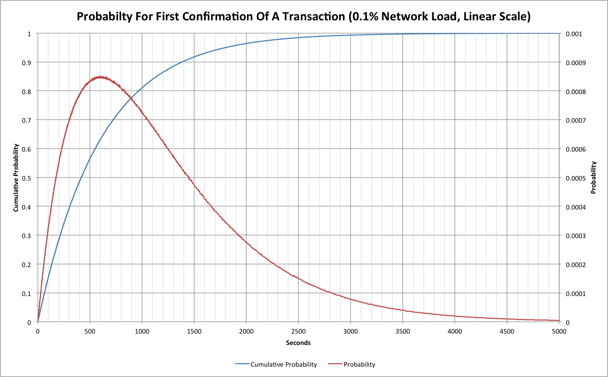
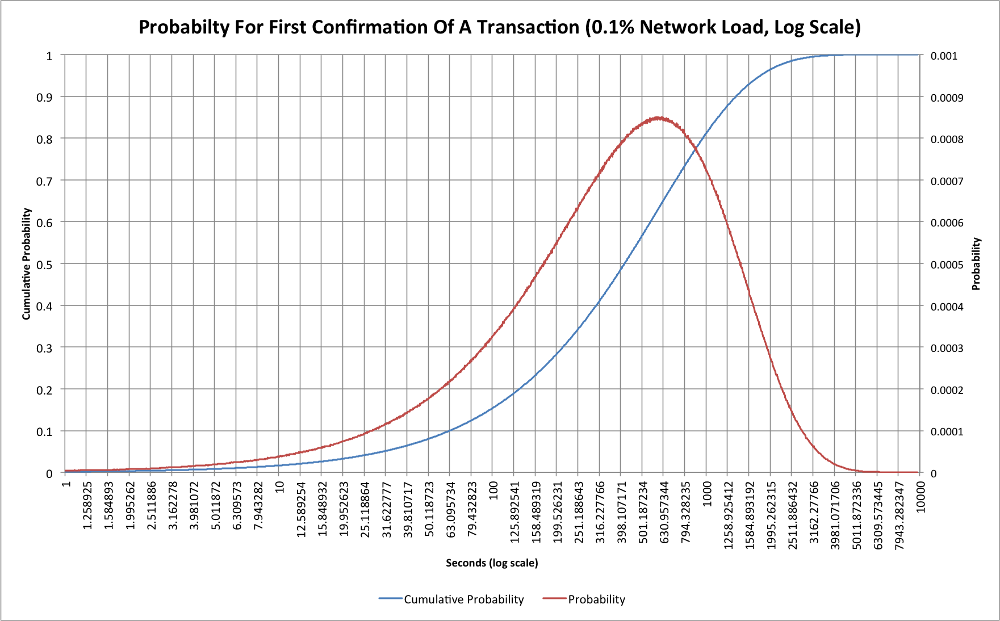
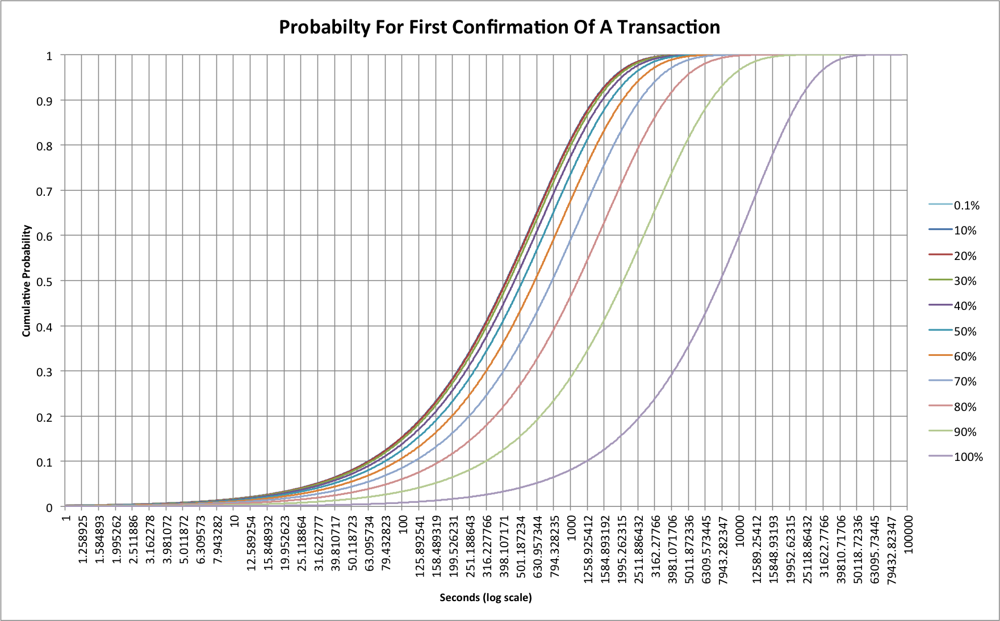

Dave Hudsonhashingit.com |
Note 2015-12-20: This article is the original “Bitcoin traffic bulletin” but has a minor problem with some of the probability statistics. A revised, authoritative, version with significantly updated commentary can be found as “Bitcoin traffic bulletin (redux)". Please read that one; this one is retained purely for historical information!
The Bitcoin network is currently running at around 30% of its maximum capacity, but what does that actually mean to its users? Should we care? What about when we reach 50%, or 90%? When roads start to get full of cars they start to get congested, when large numbers of visitors enter or exit a building everyone slows down and takes longer to set where they want, but what happens with Bitcoin?
Bitcoin mining (and therefore transaction processing) is what’s known as a Non-Homogenous (or Inhomogeneous) Poisson Process. In the article, “Hash rate headaches", we saw how this actually works and that our nominal 10 minute spacing between Bitcoin blocks isn’t quite as straightforward as we might hope. For transaction processing though things get even more complicated. Now we have transactions that themselves appear somewhat randomly; in fact they will typically follow something like a Poisson Process distribution too.
In the case of Bitcoin the transactions do have some other biases. We saw in “7 transactions per second? Really?” that Sundays are usually quieter than other days, while Bitcoin transactions can also be perturbed by network delays, orphan races and mining fees that might incentivize some transactions to be processed quicker than others. None of those effects really come into play though when we have a very small number of transactions so we could actually model the behaviour and see what happens.
In “7 transactions per second? Really?” we saw that the current Bitcoin network has a peak capacity of a little under 3.5 transactions per second (arguably closer to 3.2 at times). We can use that information to build a Monte Carlo simulation that will predict how long it takes to get transactions confirmed.
For the purposes of this article I constructed just such a Monte Carlo simulation that assumed a peak of 3.5 TPS and that would simulate a mining Poisson Process with a mean block finding time of 10 minutes and a transaction arrival Poisson Process with a mean that was given by a percentage network load. For example a 10% load would be 0.35 TPS, or 30,240 transactions per day. In order to get good data the simulation was set to run 100,000 weeks of mining at 11 different loading levels. Each week started from scratch and with zero transactions pending.
The simulator ignores mining fees and assumed that transactions are processed first-come, first-served; this actually turns out to be a reasonably accurate prediction for most current transactions. It also ignores network propagation delays (how long it takes for a transaction to be seen by all mining nodes) but that will really just add a fairly small starting delay of up to a few seconds per transaction and so this is probably ok too (see: http://bitcoinstats.com/network/propagation). It does mean that the data is probably a little too optimistic about how quickly transactions can be mined. Finally it assumes that the mining network capacity is constant and neither increasing, nor decreasing in capacity. When things are increasing then blocks will be found slightly quicker, but the effect has become quite small over the last few months.
Let’s start by looking at what happens when there are almost no transactions being announced. This should represent an almost perfect scenario because every transaction can immediately go into the next available block. The network load for this example is 0.1%, or 0.0035 TPS.

We have two traces here. The red trace shows the probability of a transaction being confirmed at a given time after it was submitted, while the blue trace shows the cumulative probability; i.e. the probability that a transaction will have received its first confirmation at or before a given time.
We can see that 50% of transactions are confirmed within 415 seconds (a little under 7 minutes). Equally though, 10% have not had their first confirmation after 1380 second (23 minutes), and 1% are still unconfirmed after 2760 minutes (46 minutes). This may come as a surprise to people, but no amount of fee changes, or network improvements will change these basic numbers!
In the past we’ve tended to make use of graphs plotted on a logarithmic axis and these ones are no exception! Here’s the same graph with a logarithmic time (horizontal) axis:

The logarithmic scale compresses the “tail” to the right so we can compare things more easily later. The cumulative probability curve looks different too, and is somewhat easier to work with on this sort of scale.
Things become much more interesting when we start to consider some reasonable loading on the network. As of early November 2014 the network load is around 30%. If we use the simple Monte Carlo simulation we can model this pretty easily.
Let’s look at network loading from 0.1% all the way to 100%:

Probably the first thing to realize here is that the traces for 0.1%, 10% and 20% are so similar that the 20% line hides the other two. The 30% line is only slightly different. This tells us that up to now we’ve not really seen any real effects as a result of transaction rate. At 30% loading we’ll still see half of all transactions confirmed within 434 seconds, as opposed to 415 for 0.1%. That gap really starts to widen at 40%, however, where it now takes 466 seconds and at 80% we’re up at 1109 seconds (18.5 minutes)! At 100% we’re up at a huge 7744 seconds (more than 2 hours)! If the network were ever to reach this 100% level, though, the problems would be much worse as 10% of all transactions would still not have received a confirmation after 22800 seconds (6.3 hours).
The simulations are pretty simplistic because they assume all transactions are processed in the order they arrive. There’s no attempt to simulate the effect of fees, but the first thing to recognize is that the 0.1% loading case (and indeed almost everything up to 30%) pretty much wouldn’t care anyway. In these situations there’s little to no congestion so fee-base reordering of transactions won’t make any real difference. As the network gets congested though then fees can start to have an impact.
Once we start to see full blocks (and we have been starting to see these in the last few weeks) then fees should decide whether a transaction is in the next block or may be delayed to one after that. Statistically that will mean that blocks with higher fees, or that for other reasons are deemed to have high value to the network, will follow curves closer to those for a lightly loaded system as we’ve seen so far. It also means that those with low fees will actually see even worse delays than the simple model predicts.
No matter how much the fee structures are changed, however, unless the speed of finding blocks is increased then we’re pretty-much stuck with the characteristics that have been present for the last 5+ years. For example, the “floating fees” change coming in the new Bitcoin Core software won’t improve anyone’s confirmation times beyond a few seconds, but fee-based prioritization will allow anyone willing to pay to keep their current confirmation behaviour. Similarly making the blocks larger won’t improve confirmation times other than by moving us to the curves for a less congested network.
While less than ideal for users of Bitcoin, congestion of the network does have a potentially positive impact for one group: Miners. As block space becomes scarce, users of the network will have to attach larger fees to continue to see confirmation times of the order they are used to. When fees increase then miners reap the reward.
When block space is readily available, miners suffer from a “tragedy of the commons” problem in which the only rational behaviour is to accept all transactions, no matter how small the fee. With scarcity, however, there’s suddenly a competitive market for block space. Those paying fees may not appreciate the extra costs, but a transition to a system that allows mining fees to become a larger fraction of mining income is actually a good thing for the long term security of the network. Increased fees would go some way to offsetting the losses that miners will see at the next block reward halving to 12.5 BTC per block in 2016.
If the network becomes more congested and fees increase then this will inevitably have an interesting impact on “spam” or low value transactions. They may well start to find themselves priced out of the blockchain. This may well also be a trigger for the use of something like sidechains.
One thing is clear though! Anyone looking closely at transactions on the network can probably see the signs of those tail lights coming on ahead. Unless something happens quickly, it looks like we’re going to be slowing down pretty soon.
This article was written with the help of data from a C language simulation. The data was rendered into charts using Excel. The source code can be found on github: https://github.com/hashingitcom/bitcoin_traffic_bulletin